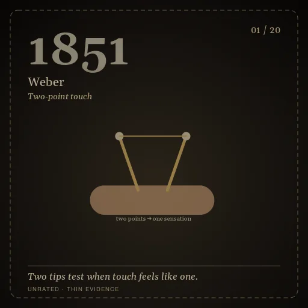
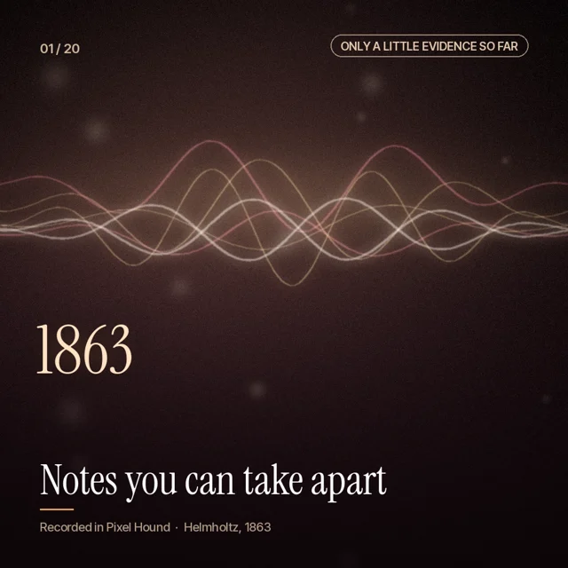
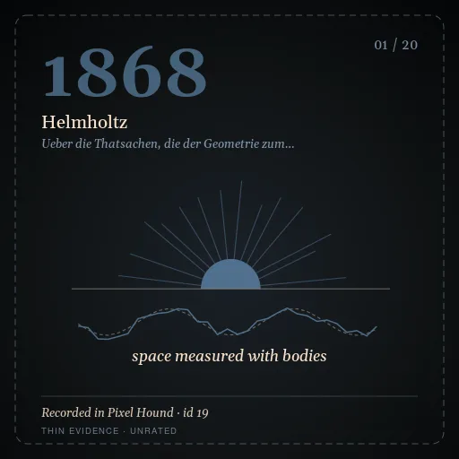
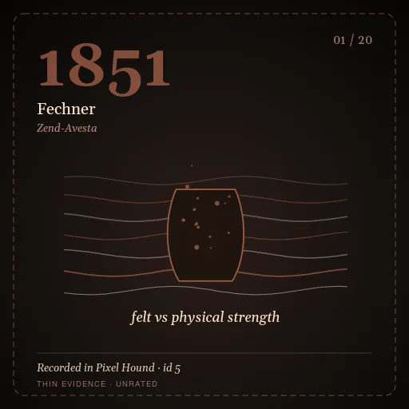
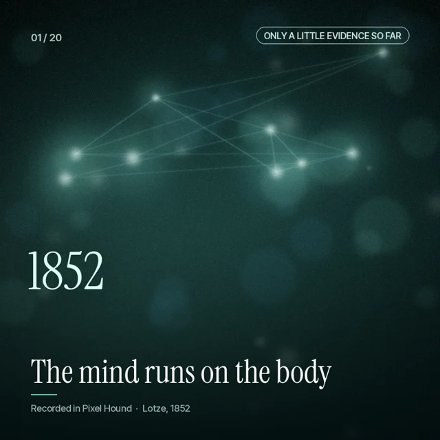
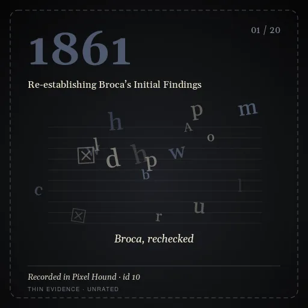
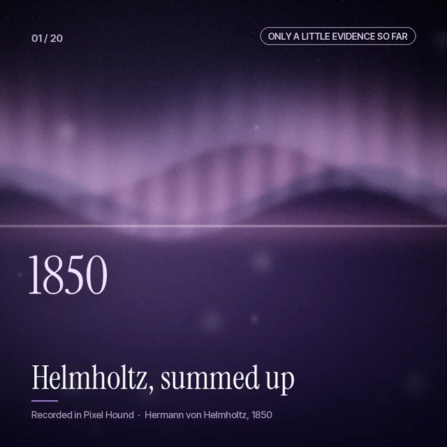

Reality Sourcing
Seven walks through the science of you
How do you see, hear, remember, speak and know what's real? Walk through the experiments that found out, one room at a time.

Seeing
Your brain builds what you see, guesses what comes next, and even decides which hand is yours.
20 stops · 1851–2024

Hearing
Your brain splits a noisy room into voices, and can hear a tone that was never played.
20 stops · 1863–2025

Truth showing up
From measuring space with real objects to a brain that keeps checking its guesses.
20 stops · 1868–2020

Things being shaped
Snails changed by boat paint, and tiny plastic now found in human blood and lungs.
20 stops · 1851–2025

Learning & holding
Cells that fire together, sleep that edits the day, and lost memories switched back on.
20 stops · 1852–2020

Speech & meaning
From a man who could only say "Tan" to brain cells that track six words at a time.
20 stops · 1861–2024 · less evidence so far

Life edges
Can a machine think? And how doctors find awareness in patients who cannot move.
20 stops · 1850–2022 · less evidence so far
Each stop is a real study. Dim rooms and dashed cards mean there is only a little evidence so far. Every walk ends at a door to the next one.